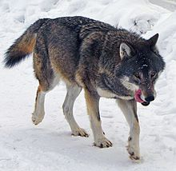
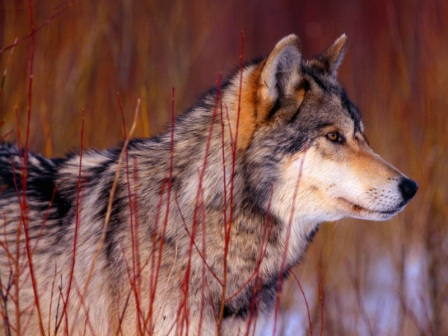

Lobo gris
Descripción
El lobo gris, también conocido como lobo común, a la mayoría de las personas le es familiar, sin embargo, con frecuencia, estos lobos son confundidos con otras especies de lobos con aspectos parecidos.
Algunos lobos pesan 55 kilos, y otros pueden estar cerca de las 90 libras. Los investigadores han encontrado algunos de hasta 200 libras, pero encontrar a este tipo de lobos es bastante extraño. Estos animales pueden medir desde cuatro pies y medio hasta seis pies de longitud, además poseen color gris, negro, rojo, blanco, y una mezcla de colores y matices diferentes.
Anatomía
Las membranas que poseen entre cada uno de los dedos, les permiten moverse fácilmente, independientemente del tipo de terreno en que estén. Estos animales tienen los pies muy grandes y esto hace que sean capaces de distribuir bien su peso, esta característica los ayuda cuando están caminando por la nieve y hace que no se hundan en las zonas blandas.
Estos animales tienen dientes muy afilados en sus mandíbulas, y tienen un poder tan penetrante que supera tres veces el poder de un canino promedio. Resulta interesante saber que se ha demostrado que la saliva del lobo común o lobo gris ayuda a crecer nuevos tejidos y a reducir el riesgo de que ocurra una infección.
Evolución
El ADN del lobo común muestra que este animal evoluciono a partir de los caninos, y se cree que lo ha hecho desde hace aproximadamente 300.000 años atrás. Hoy en día también existen varias subespecies del lobo gris o común con diferencias significativas, y se siguen encontrando diferencias que indican que estos animales se movieron en varias direcciones hace mucho tiempo para sobrevivir.
Comportamiento
El lobo común o lobo gris utiliza variedades de formas verbales para comunicarse dentro del grupo al que pertenece, estos animales son muy dependientes de su manada y hacen todo lo posible para mantenerse en la misma, además pueden ser agresivos contra otras manadas de lobos, y a menudo aúllan para informarles que no pueden entrar a sus territorios.
Los lobos marcaran sus territorios con su orine y expulsando olores de sus cuerpos e impregnándolos en el suelo y por los árboles.
Hábitat/Distribución
El lobo gris es capaz de adaptarse a una gran variedad de entornos siempre que pueda encontrar comida, además es capaz de tener grandes extensiones de tierras para moverse en busca de sus alimentos. Se sabe que estos animales viven en regiones que incluyen montañas, llanuras, desiertos, praderas, e incluso en algunas zonas urbanas.
Las áreas en donde viven estos animales se han reducido drásticamente, debido al hecho de que los seres humanos continúan avanzando en sus territorios. Esto ha traído como resultado que en algunos lugares en donde antes vivían los lobos, actualmente no viven ninguno de ellos.
Sin embargo se han hecho esfuerzos exitosos para reintroducirlos a los lugares en donde han vivido antes, estos programas están tratando de devolverles el hábitat natural y mantener a las poblaciones de lobos.
Dieta/alimentación
Los expertos creen que el hábitat de estos animales tiene que ver con su dieta y su alimentación. La mayoría de los lobos grises ayudan en el equilibrio el ecosistema del que forman parte. Estos animales son oportunistas cuando están en busca de sus alimentos, se alimentan de pequeños roedores, animales medianos y animales grandes, y en dependencia de la ubicación se pueden alimentar de ciervos, alces y bisontes.
Lo interesante es que normalmente los lobos no atacan a las presas que se quedan quietas, sin embargo, las pueden rodear durante horas y durante días. Es cuando la presa se decide a correr cuando los lobos la atacan y la hacen caer.
Al igual que otras especies de lobos, los cachorros del lobo gris se alimentarán de alimentos regurgitados por los miembros de la manada a la que pertenecen luego de que terminen de amamantarse de la leche de madre. A los seis meses de edad estarán listos para ir de caza.
Los demás miembros de la manada les permiten a los cachorros luchar por sus alimentos, para que estos vayan aprendiendo a sobrevivir. Muchos expertos creen que esta lucha por llegar a consumir sus alimentos define cómo será la jerarquía de cada uno de ellos en la manada.
Reproducción
Los lobos comunes o grises necesitan una larga temporada para el apareamiento, esta puede durar desde enero hasta abril, al parecer, estos animales se aparean solo en estos meses. El apareamiento se realiza de la siguiente forma: el líder de los machos de la manada se aparea con la hembra beta, y también puede aparearse con otras hembras de la manada, lo que resulta diferente en esta especie, ya que en otras sólo se aparean con la hembra beta de la manada.
Una vez que el apareamiento tiene éxito, aproximadamente a los dos meses y medio nace una camada de cachorros, cuando los lobos nacen son ciegos y sordos y a lo sumo pesan aproximadamente una libra. Generalmente cada camada tendrá aproximadamente de 4 a 6 cachorritos, es posible que salgan más, la hembra da a luz en una cueva, y allí permanecerán ambos durante los tres primeros meses de vida, la hembra solo los dejará cuando salga a buscar comida, esta búsqueda de comida resulta necesaria para que continúe produciendo leche para que los cachorros se alimenten y puedan sobrevivir.
Los lobos jóvenes seguirán siendo parte de la manada hasta que están completamente maduros, y cuando tiene aproximadamente dos años de edad la mayoría de ellos dejarán la manada y comenzarán a aventurarse por su cuenta, esto lo provoca el mismo instinto de aparearse, ya que si se quedan en la manada puede que nunca tengan la oportunidad de hacerlo.